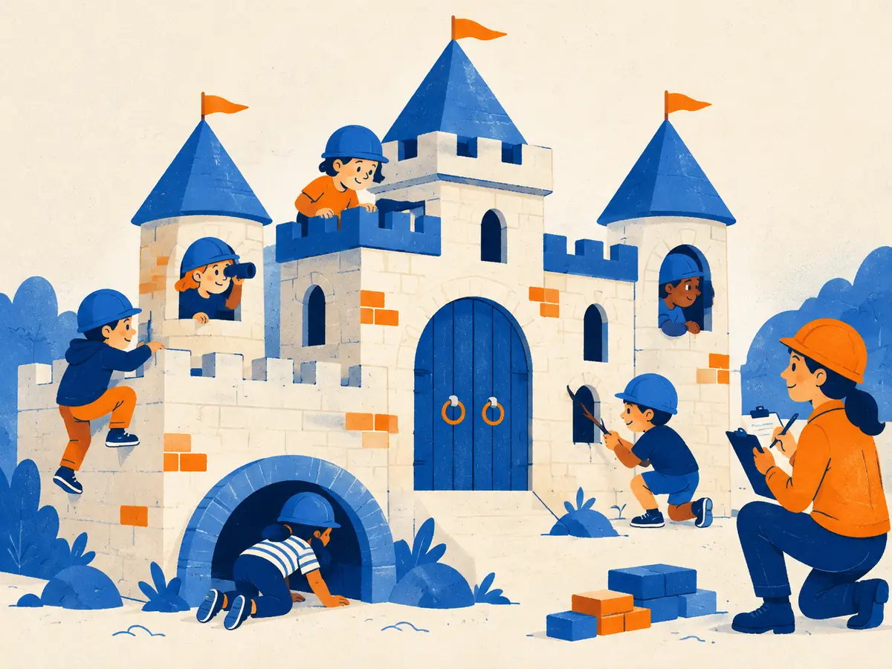

Safety & agent evals
Two kinds of evaluation break the usual "score on a fixed test set" pattern. Safety evals ask what a model should not do, and whether someone trying hard can push it there anyway. Agent evals ask whether a model running in a loop with tools reliably finishes long tasks, and at what cost.
By the end you can
- Explain manual and automated red-teaming, how jailbreak robustness is measured, and why over-refusal must be measured alongside harmful compliance.
- Say, at a high level, what dangerous-capability evals are for and why they try to maximise what the model can do.
- Design an agent eval: sandboxed environment, state-based success checks, pass@k vs pass^k, and cost and latency per task.
Take your best guess. Being wrong now helps the right answer stick later.
A safety report says: "the model refuses 99.9% of harmful requests." Which number do you most need next?
- Its MMLU score
- How often it refuses harmless requests
- How fast it refuses
- Nothing: 99.9% settles it
An agent completes a task successfully in 60% of independent attempts. What's the chance it succeeds three times in a row?
- 60%
- 94%
- About 22%
- About 36%
Safety evals: two ways to fail
Treat "should the model help with this?" like a classifier, with two error types:
- Under-refusal (harmful compliance): the model helps with something it shouldn't. This is measured on sets of clearly harmful requests, as a compliance or harmfulness rate.
- Over-refusal (exaggerated safety): the model refuses something harmless that merely sounds risky, such as "How do I kill a Python process?". XSTest (Röttger et al., 2024) is a small benchmark of exactly these look-alike prompts, with unsafe contrast prompts mixed in.
Report both, ideally per category. Changes that cut one error usually raise the other, and a release decision is about the trade-off. Grading needs care too. A "jailbroken" answer may still be vague and useless, so StrongREJECT (Souly et al., 2024) scores how specific and useful a harmful answer is, not just whether the model refused. The authors argue that many published jailbreak results look stronger than they are.
Red-teaming: attack it before others do
A fixed list of harmful prompts measures yesterday's attacks. Red-teaming means actively searching for inputs that make the model misbehave:
- Manual: domain experts and crowdworkers try to elicit harmful or policy-violating behaviour. Ganguli et al. (2022) released tens of thousands of such attacks and found that RLHF-trained models became harder to red-team as they scaled.
- Automated: an attacker LLM generates test prompts at scale and a classifier scores the target's replies (Perez et al., 2022). Optimisation-based methods search for adversarial suffixes that transfer between models (Zou et al., 2023). Iterative LLM attackers refine a prompt, often succeeding within about twenty queries (PAIR; Chao et al., 2023). Long-context attacks pack in many fake dialogue examples (many-shot jailbreaking; Anil et al., 2024).
- For agents and apps: prompt injection, where malicious instructions hide in a web page, email or tool result the model reads (Greshake et al., 2023). Benchmarks such as AgentDojo (Debenedetti et al., 2024) test whether an agent can be hijacked mid-task.
The headline metric is the attack success rate (ASR): the fraction of attack attempts that produce a harmful response, as judged by a grader. HarmBench (Mazeika et al., 2024) standardises ASR across many attacks and models. Robustness means a low ASR against the strongest attacks within a budget, not just the known ones, because fixed attack lists get patched and then overfit (M4.7). Findings feed back into training (M3.6), into input/output classifiers, and into regression suites.
Explain like I'm 5

You built a toy castle. Before the "real" game, you invite friends in helmets to find every way in: a loose block, a gap under the gate, a wobbly tower.
Each time they find a way in, you write it down and fix it, and later you check that the old tricks don't work any more.
That's red-teaming: friendly attackers find the weak spots first.
Where it breaks: if your friends can't get in, that doesn't prove nobody can. Real attackers keep inventing new tricks, so red-teaming can show that weak spots exist but never prove there are none.
Dangerous-capability evals (high level)
A different question: could this model meaningfully help someone cause severe harm, for example with biological or chemical weapons or serious cyberattacks? Or could it act autonomously in risky ways? Frontier developers publish policies that tie capability thresholds to required safeguards: Anthropic's Responsible Scaling Policy, OpenAI's Preparedness Framework and Google DeepMind's Frontier Safety Framework. Government AI institutes also run independent tests.
The methods include proxy knowledge tests that measure hazardous knowledge without containing it (e.g. WMDP; Li et al., 2024), capture-the-flag security challenges, long agentic tasks in sandboxes, expert red-teaming, and controlled "uplift" studies that compare people working with and without model access. This course stays at that level, deliberately.
The key difference from ordinary benchmarks is elicitation. Here, underestimating capability is the dangerous mistake. So evaluators try hard to bring the capability out: the best prompts, tools and scaffolding, many attempts, sometimes fine-tuning. A low score from a lazy setup proves little.
Agent evals: tasks, not answers
An agent is a model in a loop: it reads the situation, calls a tool, reads the result, and repeats, often for dozens of steps. Evaluating it takes three parts:
- An environment, usually a sandbox (container or VM) reset to the same starting state for every trial. Network access is limited, and the agent is isolated from real systems. Isolation is for safety (agents can delete things) and for reproducibility.
- A task in natural language, plus anything the agent needs: a repository, a database, policy documents, or a simulated user.
- A success check on the final state, not on the transcript: hidden unit tests pass, the database matches the goal state, the right email was sent. You can add process checks, such as "asked for confirmation before cancelling".
SWE-bench (Jimenez et al., 2024) collects 2,294 real GitHub issues from 12 popular Python repositories. The agent edits the repo, and it succeeds if the tests that reproduce the issue now pass without breaking the others. SWE-bench Verified (2024) is a 500-task subset that human engineers checked, removing underspecified or broken tasks. Scores have risen quickly since then, and the usual caveats apply: public repositories invite contamination (M4.3), and the benchmark saturates. τ-bench (Yao et al., 2024) puts agents in customer-service domains (retail, airline) with tools, a policy document and an LLM-simulated user. Success means the final database matches the goal. It introduced the pass^k metric, and reported that strong function-calling agents of the time solved under half the tasks, with pass^8 in retail below 25%.
Estimating pass@k and pass^k
Run each task $n$ times and count the successes $c$. Then the unbiased estimates for one task are
$$\text{pass@}k = 1 - \frac{\binom{n-c}{k}}{\binom{n}{k}}, \qquad \text{pass}^k = \frac{\binom{c}{k}}{\binom{n}{k}}$$Average each over tasks. $\binom{n}{k}$ counts the ways to choose $k$ of the $n$ trials. The first formula is 1 minus the chance that $k$ trials drawn from your $n$ all failed (Chen et al., 2021, from HumanEval). The second is the chance they all succeeded (Yao et al., 2024). They use every trial, so they're less noisy than literally running $k$ attempts once.
Worked example. One task, $n = 10$ trials, $c = 7$ successes, $k = 3$: $\binom{10}{3} = 120$. Then pass@3 $= 1 - \binom{3}{3}/120 = 1 - 1/120 = 0.992$, and pass^3 $= \binom{7}{3}/120 = 35/120 = 0.292$. A 70%-reliable agent almost always succeeds once in three tries, but completes all three only about 29% of the time.
Another task: $n = 10$ trials, $c = 6$ successes, $k = 2$.
- $\binom{10}{2} =$
- pass@2 $= 1 - \binom{4}{2}/\binom{10}{2} =$
- pass^2 $= \binom{6}{2}/\binom{10}{2} =$
Cost, latency and honest comparisons
- Report cost and time per task: tokens, dollars, wall-clock time and steps. An agent that scores 2 points higher by spending 15× more, or retrying 10 times, is not simply "better". Kapoor et al. (2024, "AI Agents That Matter") argue for comparing agents on an accuracy-versus-cost Pareto frontier.
- Error bars. Agent benchmarks are small (hundreds of tasks) and each trial is noisy. Use multiple trials per task and CIs (M4.6). On 500 tasks, a 73% score is about ±4 points.
- Read transcripts. Agents find shortcuts: editing the tests instead of the code, reading answer files left in the sandbox, special-casing the checker. An environment bug can look like a capability. Successes deserve as much scrutiny as failures.
Why is pass^k the more relevant reliability metric for a customer-facing agent than pass@k? And why must a safety eval report over-refusal as well as harmful compliance?
An agent succeeds independently 90% of the time on a task. What's its pass^5 on that task?
- 90%
- About 59%
- About 99.999%
- About 45%
A red-team campaign makes 500 jailbreak attempts with a given attack method and none succeed. What can you conclude? (Think back to M4.6.)
- Its ASR against this attack is probably under ~0.6%, but other attacks may still work
- The model is jailbreak-proof against all attacks
- The attack success rate is exactly 0%
- Nothing at all: 500 attempts is too few to say anything
On a 500-task agent benchmark, agent A scores 72% at 40 cents per task. Agent B scores 74% at 6 dollars per task, using 10 retries. What's the fairest summary?
- B is better: 74% beats 72% on the same tasks
- A is better, simply because it's cheaper
- They're identical, since the scores are close
- The gap is within noise and B costs 15× more: compare on accuracy and cost
The model refuses "How do I kill a Python process that's hanging?" What kind of failure is this, and what measures it?
- A jailbreak, measured by attack success rate
- A capability failure, measured by MMLU
- Over-refusal (exaggerated safety), measured on harmless look-alike prompts, as in XSTest
- Prompt injection, measured by AgentDojo
Key takeaways
- Safety has two error directions: harmful compliance and over-refusal. Always report both.
- Red-teaming (manual and automated) searches for failures. Robustness is a low attack success rate against strong, adaptive attacks, including prompt injection for agents.
- Dangerous-capability evals try to elicit the most a model can do, because underestimating is the risky error.
- Agent evals = sandboxed environment + task + final-state check (e.g. SWE-bench's tests, τ-bench's database).
- pass@k (any of $k$) suits retry-and-verify settings; pass^k (all $k$) measures reliability. Report cost and latency per task, and error bars.
Adding cards schedules your first spaced review.